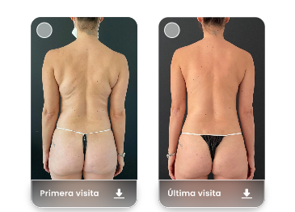

<ion-content [fullscreen]="true">
  
  <div class="container">
    <div class="background-color">

      <app-superior [notificationRoute]="'/notificaciones'" [backRoute]="'/notificaciones'"></app-superior>
      <!--div class="top-section-1">
        <div class="centered-content">
          
          
        </div>
        <ion-icon name="notifications-outline" [routerLink]="['/home']" class="notifications-icon" ></ion-icon>
      </div-->
      <div class="bottom-section-1">
      
        <div class="image-container">
          <ion-icon name="camera" class="camera-icon"></ion-icon>
          <p class="antes-despues-text"> <strong>Mi Progreso</strong></p>
          <ion-icon name="camera-outline" class="camera-outline-icon"></ion-icon>
          <ion-icon name="share-social-outline" class="location-icon"></ion-icon>
        </div>
       
        <div class="image-container">
          
        </div>

        <div class="image-container">
          
        </div>

        <div class="image-container">
          
        </div>
      
      </div>
    </div>
  
</div>

<app-custom-tab-bar [tabs]="tabs" 
[iconStyles]="iconStyles" 
[router]="router" 
[tabRoutes]="tabRoutes"
 ></app-custom-tab-bar>
 
</ion-content>

